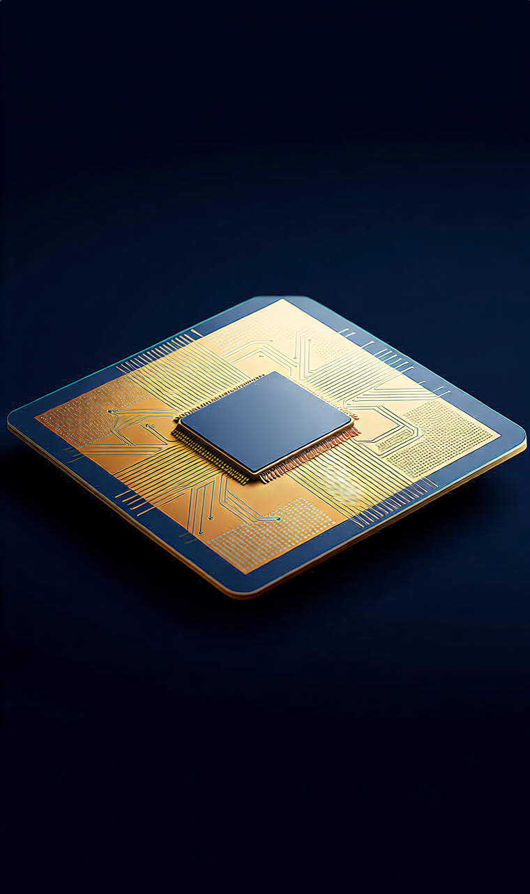

META持有偏买
阶段评级优先研究的新钱入口
下一动作回撤分批看
关键验证AI 投入回报 / 广告底盘
“真正适合长期拿的制造龙头，不靠一天的热闹，而靠多年里把先进制程、客户关系和资本纪律一起守住。”
今天看 TSM，不是为了追芯片热度，而是判断它够不够升档成组合未来的高质量制造底座
TSM 现在最适合的定义，不是“短线最热 AI 概念”，而是AI 供应链里最值得长期研究的高质量制造底座之一。它已经从候选池里那种“有点意思”升级为“值得认真排进研究优先级”的名字，但还没到必须无脑追的程度。更成熟的动作是：继续升档研究、等更舒服的位置、用营收与利润率连续验证 thesis，而不是因为它质量高就忽略估值与周期。
TSM 当前在你的投资系统里属于 候选标的 / 可研究，不是现有持仓。今天把它放在今日宝藏标的，是因为它足够代表“高质量制造底座”的研究方向；但它不会被混进后面的持仓决策区里伪装成已持有标的。
真正能长期拿住制造龙头的人，看的从来不只是技术领先，而是资本开支如何一次次变成利润护城河
很多人研究制造业时容易卡在两个极端：要么觉得制造业太重、太辛苦，不如软件平台轻松；要么又被“先进制程、产能、设备、技术节点”这些词带着跑，误以为只要技术最领先，投资就自然成立。其实真正决定制造龙头能不能长期复利的，是它有没有把每一轮巨额资本开支，转化成别人越来越难追上的客户关系、良率能力、规模效应和利润率结构。
TSM 的价值，不只是它在 AI 时代站在关键链条上，而是它已经证明：自己既能吃到需求，又能把需求变成高毛利、高营业利润率和持续指引。这就是高质量制造资产和普通周期股最核心的区别——后者更多靠周期，前者在穿越周期时还能不断加厚护城河。

长期主义在制造业里的真正形态：不是少花钱，而是把每一次重投入都变成别人更难复制的优势
很多人一看到晶圆厂，就本能觉得“重资产 = 低质量”；但 TSM 这类顶级制造平台恰恰反过来：资本开支越大、工艺门槛越高、客户切换成本越重，反而越可能把行业变成少数强者的利润池。真正该怕的不是“它花很多钱”，而是“它花了很多钱却没换来更稳的定价权和利润率”。
TSM 这次最值得学的，不是某个单点新闻，而是三条线同时存在：月度营收同比继续增长、4Q25 利润率维持高位、1Q26 指引继续向上。这三条线一旦能同时成立，市场就更容易把它理解成“高质量制造底座”，而不只是一次景气度交易。
如果以后真的要把某只制造龙头从观察池往前推，最靠谱的方法不是因为它“听起来很强”，而是要看到它能连续几个季度把 需求 → 营收 → 利润率 → 管理层指引 这条链条讲圆。
很多人对烂公司太谨慎，对好公司反而太冲动。真正成熟的长期主义，不是见到高质量就忘记价格，而是承认：最好的公司，也可能在错误的时点给出很普通的回报。
第三部分继续只服务现有持仓动作；观察池结论会单独标注，不和持仓卡混写
第四部分继续只保留持仓动作；TSM 作为候选池升档对象，只在总结里点名，不混入 live position 卡片